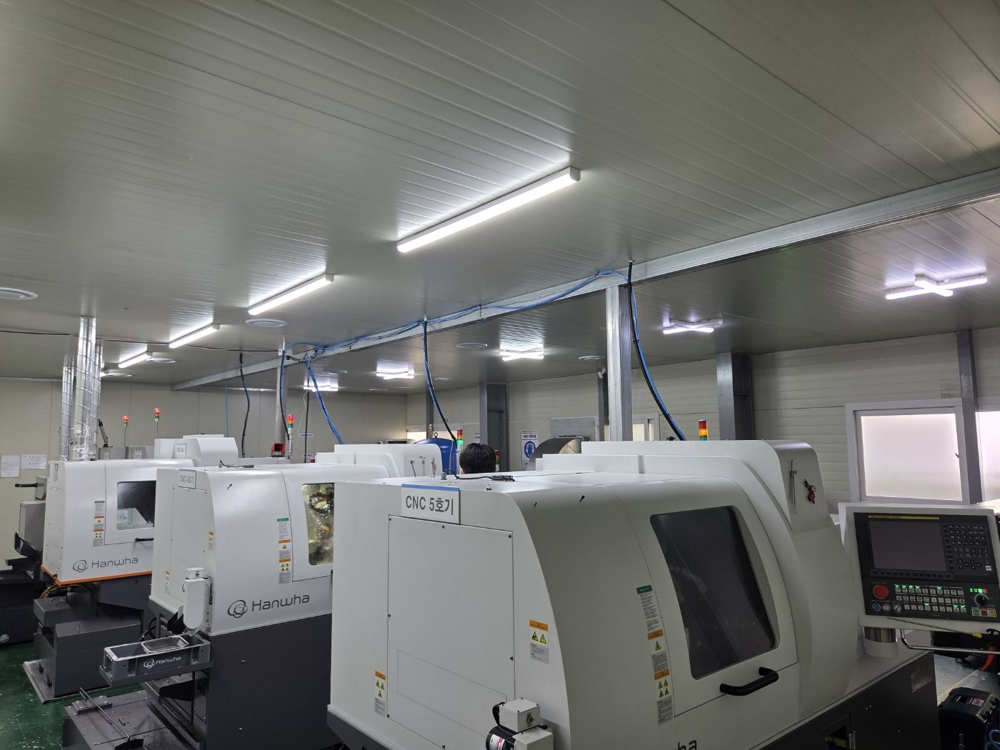
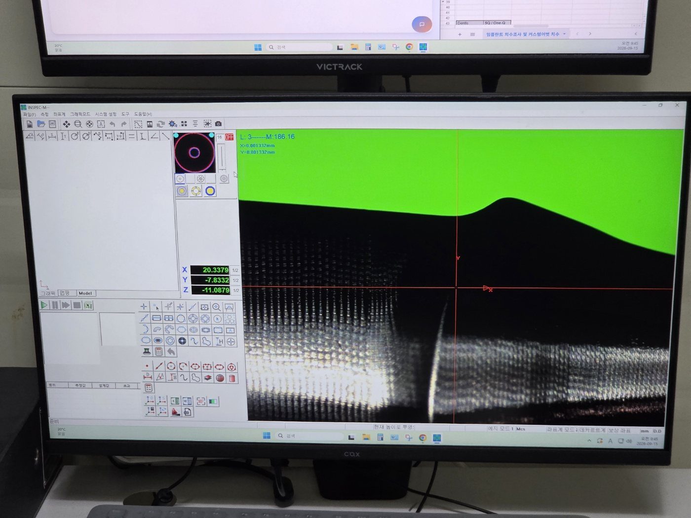
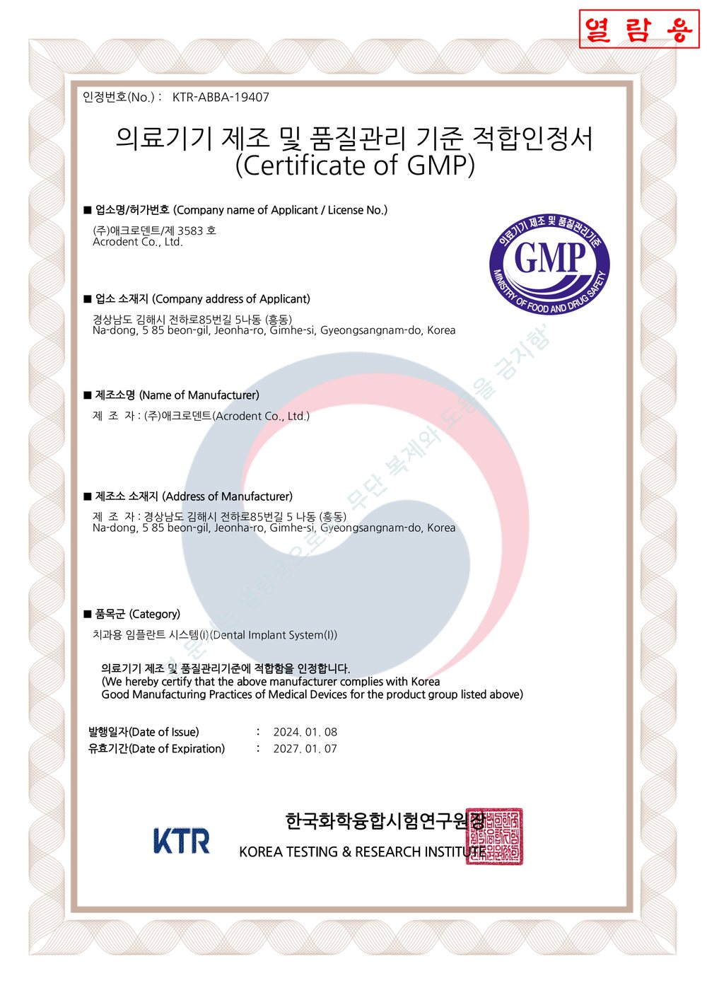

파일 한 건이
제품이 되기까지.
치과와 치과기공소가 보낸 디자인 파일은 어떻게 커스텀 어벗먼트가 될까요. CNC 밀링부터 치수 검사, 출고까지 제작 공정을 사진으로 따라갑니다.

진료실에서 시작해,
가공실에서 만듭니다.
치과가 구강 스캔을 보내고, 기공소가 디자인을 확정하면 그다음은 가공입니다. 화면 속 디자인 파일 한 건이 손에 잡히는 커스텀 어벗먼트가 되기까지, 몇 단계의 공정을 거칩니다.
어벗츠는 이 과정을 의뢰 화면에서 준비 · 가공 · 출고 · 완료 단계로 보여 줍니다. 오늘은 그 ‘가공’ 단계 안을 들여다봅니다.
파일 확인부터
출고까지.
- 파일 확인디자인 STL
- CNC 밀링환자별 형상 가공
- 치수 검사측정 · 도면 대조
- 출고송장 등록 · 배송
가공부터 출고까지,
한 흐름으로.



등록에서 출고까지,
기록으로 남습니다.
의뢰 등록 · 예시치과
접수, 디자인 확정 · 예시기공소
CNC 밀링 시작
치수 검사 후 출고 · 송장 등록
단계마다
확인합니다.
CNC 밀링
디자인 파일대로 환자별 형상을 가공합니다.
자세히 →치수 검사
측정 장비로 치수를 확인하고 도면과 대조합니다.
출고 · 배송
송장을 등록하면 의뢰 화면에서 배송을 확인할 수 있습니다.
자세히 →
규격은 파일로,
사용은 첨부문서로.
연결부 규격은 의뢰 화면에서 확인하고, 요청 사항은 파일과 함께 전달합니다. 의료기기 정보는 허가 · 인증 자료를 기준으로 하며, 사용 전 첨부문서를 확인하십시오.
제품 표시와 판매자 정보는 커스텀 어벗먼트 안내에서 볼 수 있습니다.
가공 다음은
확인입니다.




이어서 읽어 보세요.
치과기공소, 자체 CNC 없이 커스텀 어벗먼트 생산 맡기는 법 | 어벗츠 abuts.fit
자체 CNC 장비 없이도 치과기공소가 디자인 STL을 올려 커스텀 어벗먼트 생산을 의뢰하는 방법. CNC 밀링 가공, 치수 검사, 출고, 월 정산까지 어벗츠 이용 흐름을 정리했습니다.

치과 기공 의뢰, 전화 대신 화면으로 확인하는 법 | 치과·기공소 어벗츠
치과에서 치과기공소로 보내는 기공 의뢰와 커스텀 어벗먼트 제작 의뢰를 abuts.fit 화면으로 등록하고, 준비·가공·출고·완료 단계와 송장까지 확인하는 방법을 이야기로 정리했습니다.

치과의사가 직접 만든 치과·기공소 의뢰 플랫폼, 어벗츠 이야기
치과의사이자 개발자인 이준호 원장이 진료실의 불편에서 출발해 만든 치과·치과기공소 제작 의뢰 플랫폼 어벗츠(abuts.fit). 제품과 플랫폼이 동료 치과로 이어지기까지의 이야기.